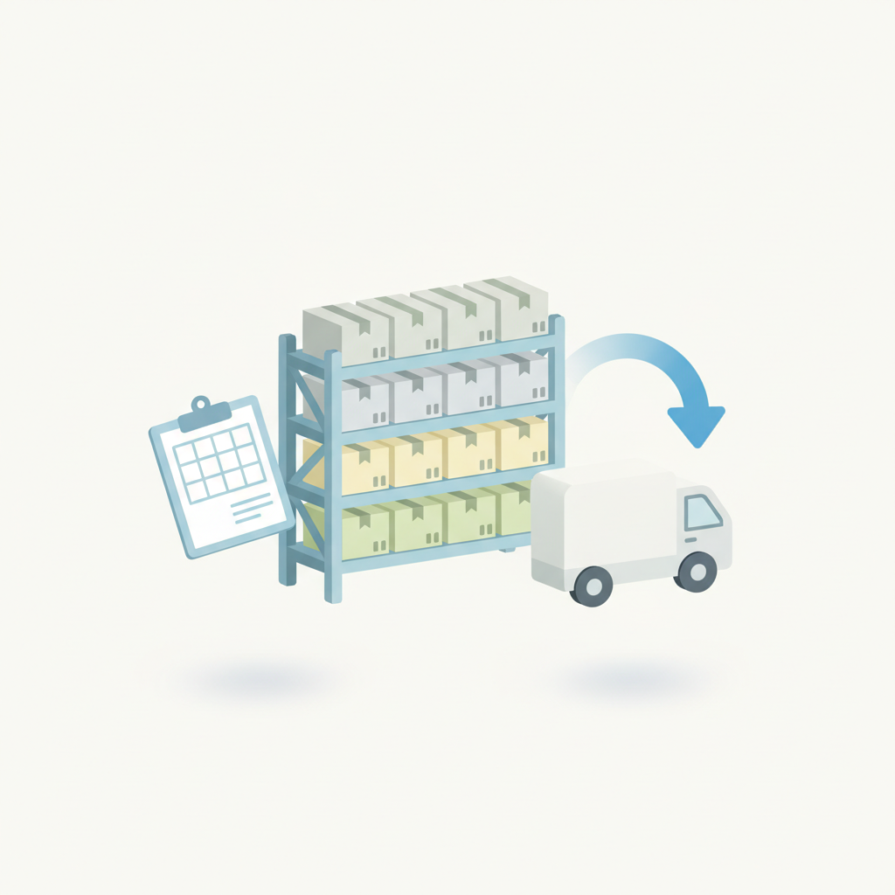
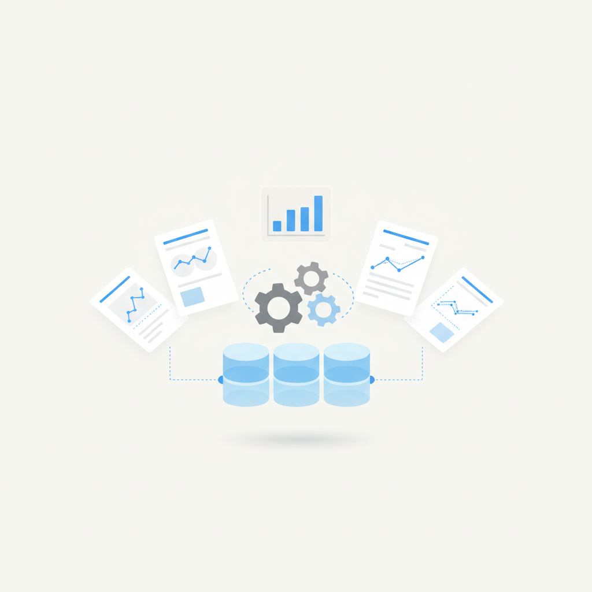
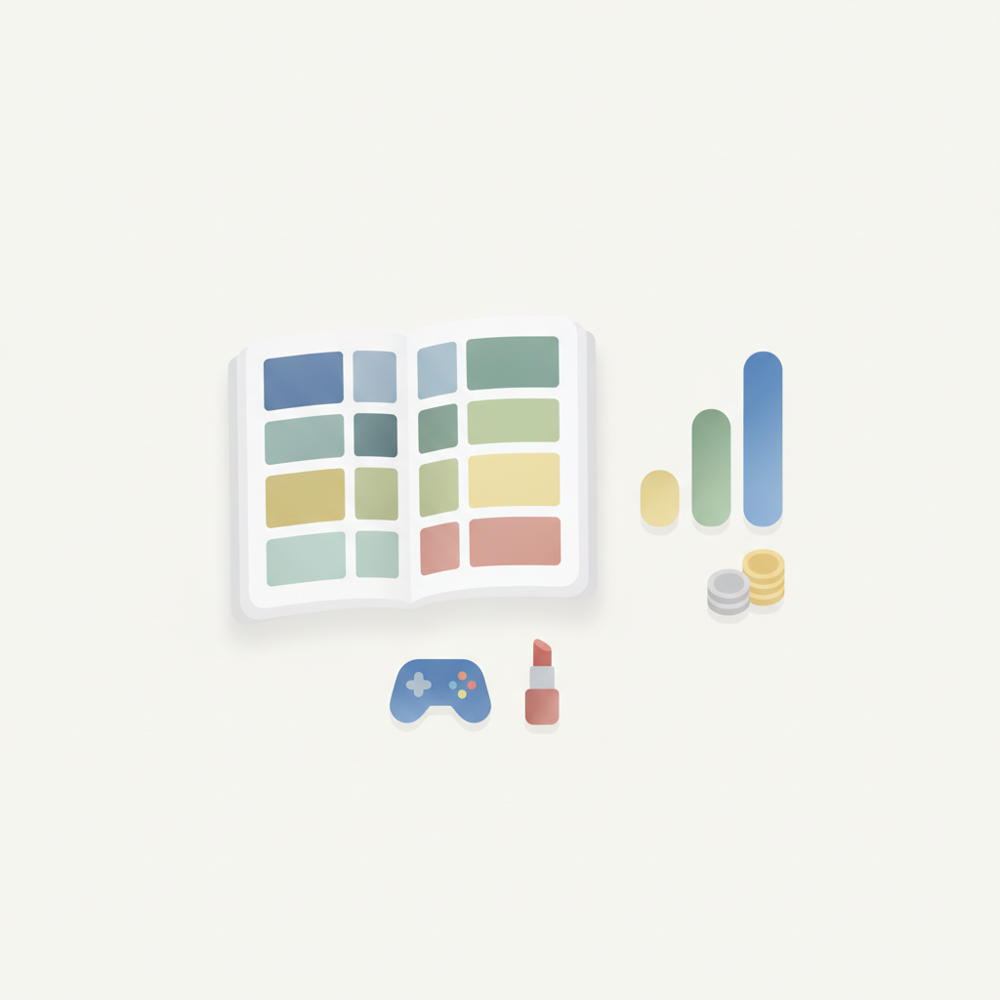
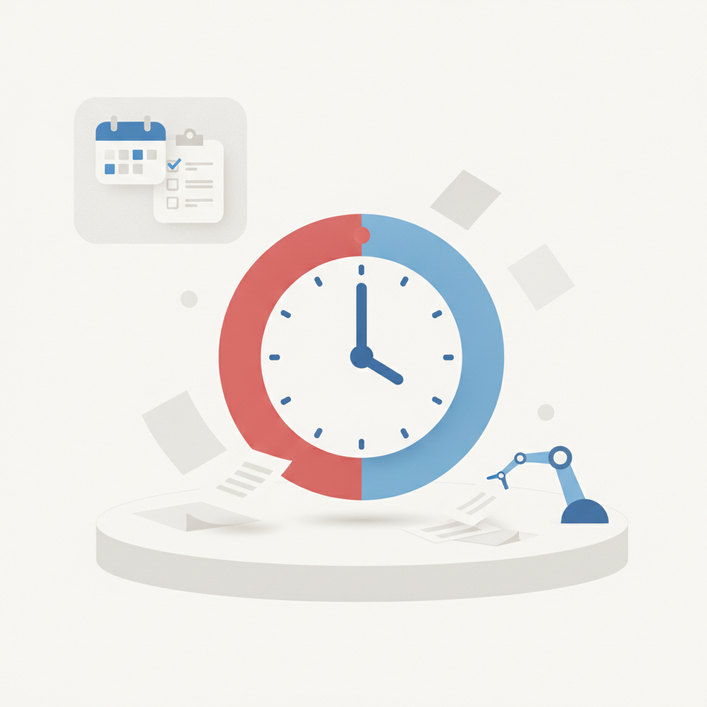
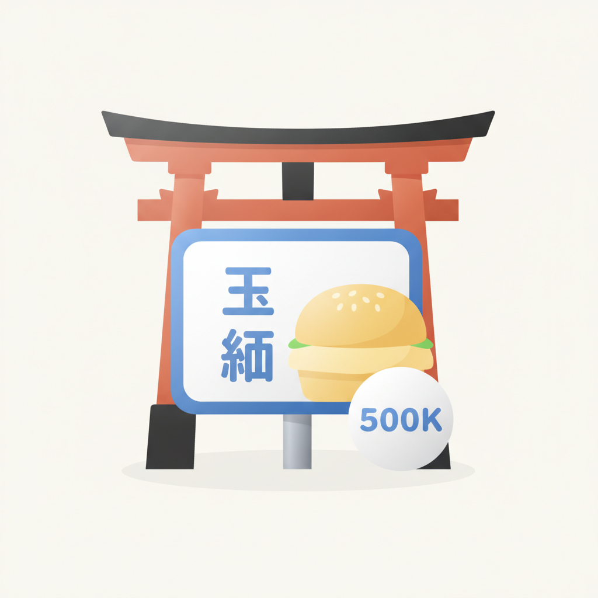
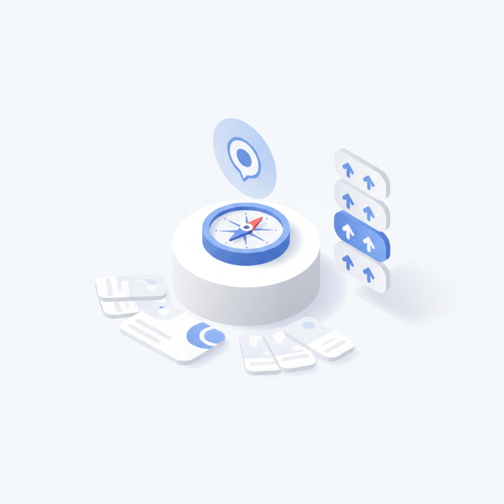
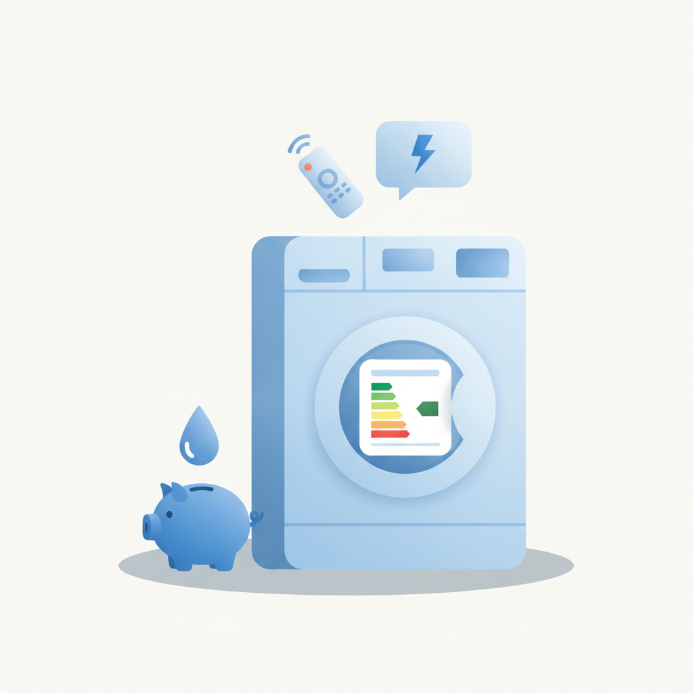

안녕하세요! 수요일 마케팅 소식 전해드립니다 😊 오늘은 AI 광고 캠페인의 성과 지표로 읽을 만한 사례가 있습니다. 파이온코퍼레이션이 제작한 일본 맘스터치 AI 광고 '3사이(最) 선언'이 공개 한 달 만에 50만 뷰를 기록했는데, 핵심은 'AI로 만들었다'는 사실 자체보다 일본 현지 정서를 파고든 크리에이티브 방향이 성과를 이끌었다는 점입니다. 기술이 제작 수단이 되더라도 결국 캠페인을 살리는 건 맥락의 정확성이라는 것을, 이 사례가 수치로 증명하고 있습니다.
DXE가 MAD STARS 2026에서 제시한 'AI 시대의 크리에이티브 핵심은 맥락'이라는 방향과도 자연스럽게 이어집니다. 데이터와 자동화가 광고 제작의 상당 부분을 처리하게 된 지금, 브랜드가 어떤 상황·감정·언어 속에서 소비자와 만나는지를 설계하는 능력이 크리에이티브 팀의 실질적인 경쟁력으로 자리 잡고 있습니다. 커리스의 '아빠 잔소리' 캠페인처럼 소셜 트렌드를 브랜드 메시지와 자연스럽게 엮는 방식도 같은 흐름에서 살펴볼 수 있는 사례입니다.
AI 도입률이 포화에 이른 지금, 마케터의 진짜 질문은 어떤 맥락을 설계할 것인가로 이동하고 있습니다. 한 주의 중반, 좋은 인사이트 가득한 하루 되시길 바랍니다! 🚀

1네이버와 카카오가 일제히 물류 인재 채용에 나서며 커머스 경쟁력 강화에 나섰다. 네이버는 창고관리시스템(WMS) 기획 인재를, 카카오는 직매입 공급망관리(SCM) 인재를 각각 영입 중이다. 네이버는 쿠팡 대비 배송 속도 열세를, 카카오는 거래액 성장 둔화를 물류 내재화로 돌파하려는 전략으로, 양사 모두 단순 중개 플랫폼을 넘어 배송 경험 전체를 관리하는 방향으로 전환 중이다. 입점 셀러와 브랜드사는 두 플랫폼의 물류 정책 변화에 선제적으로 대응할 필요가 있다.
›
2엡실론(Epsilon)의 '2026 AI in Marketing 벤치마크 스터디'에 따르면 AI 도입률은 사실상 포화 상태에 이르렀고, 이제 경쟁의 핵심은 AI를 얼마나 잘 활용하느냐의 '기반' 역량으로 이동했다. 단순 도입 여부보다 데이터 품질, 조직 역량, 운영 체계 등 AI를 지탱하는 인프라가 성과를 가른다는 분석이다. 국내 마케터도 AI 툴 도입에 그치지 않고, 데이터와 프로세스 기반을 점검하는 단계로 나아가야 할 시점이다.
›
3창작 플랫폼 포스타입의 8월 광고 매출이 월간 기준 역대 최대를 기록했으며, 올해 1~8월 브랜드 광고 매출은 이미 지난해 연간 실적의 3배 수준에 달했다. 게임·뷰티 중심이었던 광고주 업종이 증권사·공공기관까지 확대되며 플랫폼 활용 범위가 넓어지고 있다. 2030 창작 소비자층을 보유한 포스타입이 틈새 타깃 채널로 부상하고 있어, 브랜드 담당자들이 새로운 광고 지면으로 주목할 만하다.
›
4세일즈포스가 발표한 'State of Sales: Media & Entertainment Edition'에 따르면 미디어·엔터테인먼트 업계 광고 영업 담당자가 실제 영업에 쓰는 시간은 29%에 불과하고 나머지 71%는 행정·반복 업무에 소진된다. 응답자의 74%는 광고주가 구매 과정의 속도를 전년보다 더 중요하게 여긴다고 답했다. 이에 따라 반복 업무 자동화와 개인화 제안을 위한 AI 도입이 빠르게 확산되고 있어, 광고 영업 조직의 AI 활용 전략 재편이 시급한 과제로 떠오르고 있다.
›
5파이온코퍼레이션이 제작한 일본 맘스터치 AI 광고 캠페인 '3사이(最) 선언'이 공개 한 달 만에 50만 뷰를 기록했다. AI 제작 자체보다 일본 시장에 맞게 새로 기획한 현지화 전략이 주효했다는 분석으로, 기존 한국 광고를 그대로 활용하지 않고 일본어 '最高(사이코)'의 한자를 활용한 콘셉트를 독자적으로 개발했다. AI 크리에이티브 시대에도 기획력과 현지화 역량이 캠페인 성패를 좌우한다는 점을 보여주는 사례다.
›
6CJ ENM 계열 디지털 광고대행사 DXE가 '2026 부산국제마케팅광고제(MAD STARS 2026)'에서 AI 시대의 크리에이티브 핵심은 단순 생성(Generation)이 아닌 방향 설정(Direction)과 맥락(Context)이라고 발표했다. 표현의 제약이 사라진 환경에서는 어떤 맥락에서 무엇을 말할지를 결정하는 역량이 차별화 요소가 된다는 주장이다. AI 툴 활용이 보편화될수록 전략적 사고와 상황 반응형 크리에이티브 설계 역량이 마케터의 핵심 경쟁력이 될 전망이다.
›
7영국 가전 유통업체 커리스(Currys)가 소셜미디어 트렌드인 '대드 에너지(dad energy)'를 활용해 직원들이 절약형 아빠로 변신하는 광고 캠페인을 선보였다. AMV BBDO가 제작한 이 광고는 가전 구매 시 전력·물·세제 절감 효율까지 따져보도록 유도하며, 장기 캠페인 'Beyond Techspectations'의 연장선상에 있다. 소비자의 일상 공감 코드와 제품의 실용적 가치를 자연스럽게 연결한 사례로, 브랜드 페르소나를 문화 트렌드와 접목하는 방식을 참고할 만하다.
›Silicon Valley Girl 팟캐스트 진행자 마리나 모길코
브랜드 진단부터 지금 당장 해야 할 우선순위까지,
30분 무료 상담에서 함께 정리해드려요.
이미 수십 개 브랜드가 상담받았습니다.
내 브랜드처럼, 함께 고민하는 팀원의 마음으로 봅니다.
스타트업 대표·마케팅 담당자를 위한 30분